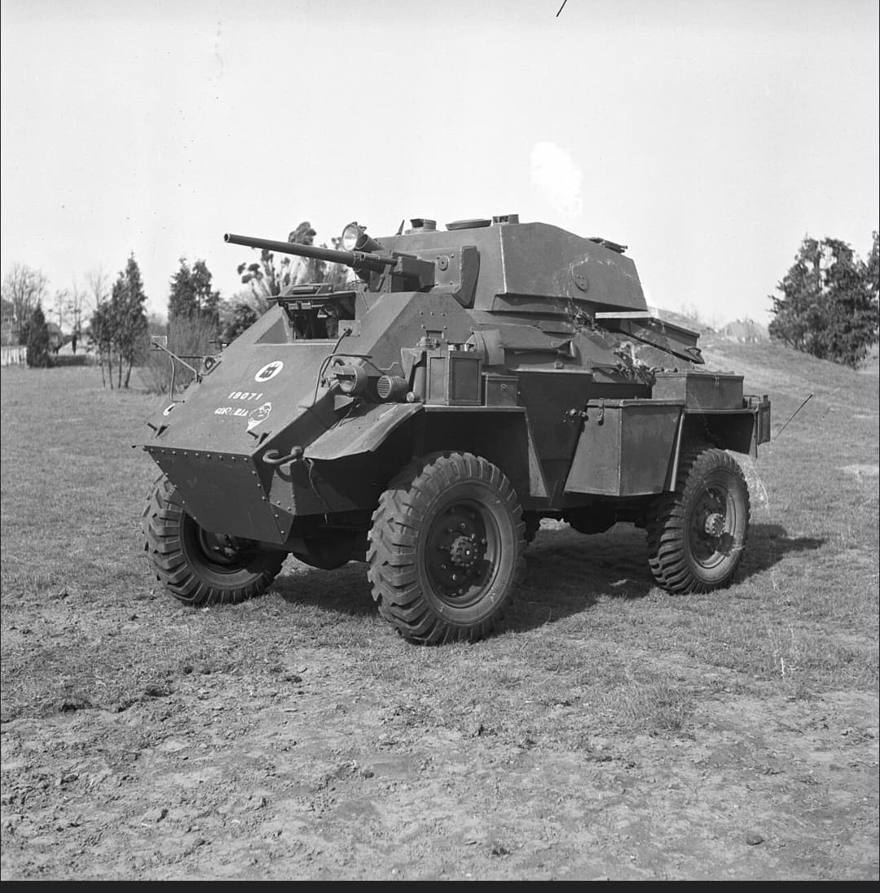
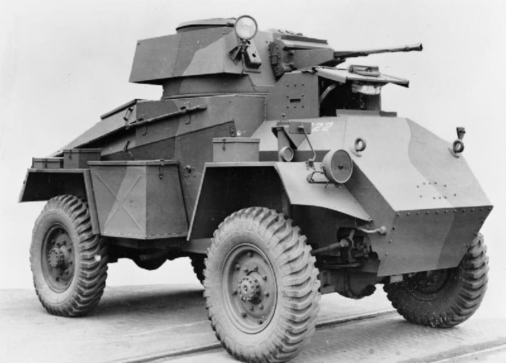
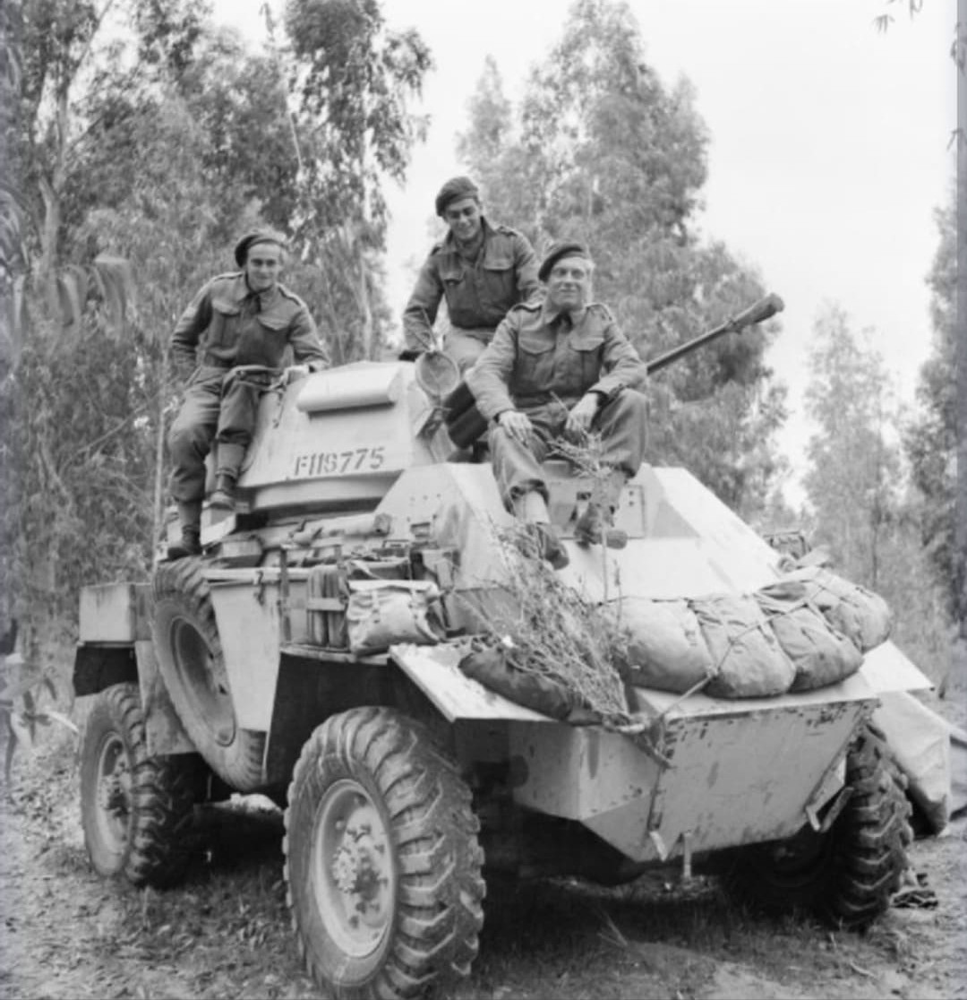

L'une des automitrailleuses les plus produites par le Royaume-Uni, pilier de la reconnaissance alliée

La **Humber Armoured Car** est l'une des automitrailleuses britanniques les plus largement déployées durant la Seconde Guerre mondiale.
Conçue par le groupe Rootes à partir du châssis du tracteur d'artillerie Karrier KT4 et de la structure du blindé Guy, elle combinait une grande facilité de fabrication en série à une fiabilité mécanique appréciée sur tous les théâtres d'opérations.
Entrée en production en 1940 pour combler le manque urgent de véhicules blindés légers après la perte de matériel à Dunkerque, la Humber a connu quatre versions principales (Mk I à Mk IV).
Alors que les premières versions (Mk I à Mk III) étaient armées de mitrailleuses lourdes Besa de 15 mm et 7,92 mm, la version finale **Mk IV** reçut une tourelle élargie accueillant un canon de **37 mm M6** d'origine américaine, lui conférant une vraie capacité d'appui-feu et de lutte contre les blindés légers ennemis.

La Humber fait ses débuts au combat fin 1941 lors de la campagne d'Afrique du Nord au sein de la 8e Armée britannique. Sa grande autonomie et sa vitesse sur route en font un outil privilégié pour les patrouilles à longue portée dans le désert libyen et égyptien.
Elle est ensuite abondamment utilisée durant la campagne d'Italie et lors du Débarquement de Normandie par les régiments de reconnaissance britanniques, canadiens et polonais, assurant l'éclairage des voies de progression et la liaison radio rapide entre les états-majors.

Fabriquée à environ **5 400 exemplaires** toutes versions confondues, la Humber Armoured Car est l'automitrailleuse britannique la plus construite de la guerre.
Outre les forces du Commonwealth, elle équipa les forces de la France Libre et continua de servir après-guerre au sein de nombreuses armées européennes et asiatiques jusque dans les années 1960.
Page du Musée HOP WW2 – Section Véhicules Terrestres Britanniques